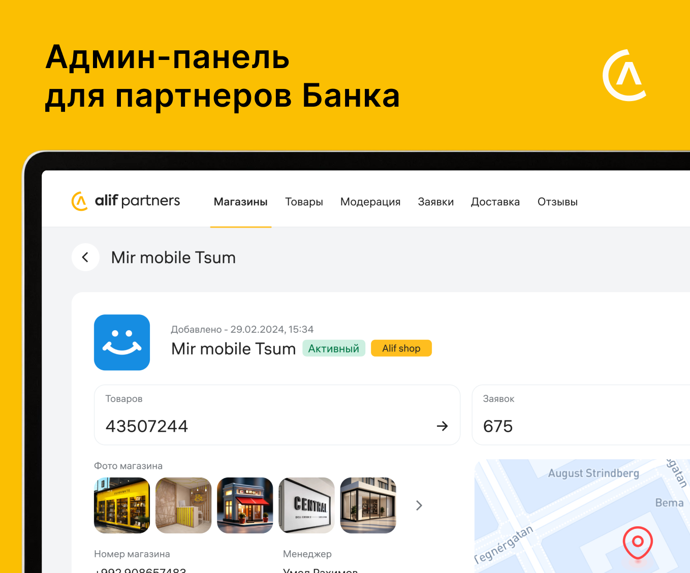
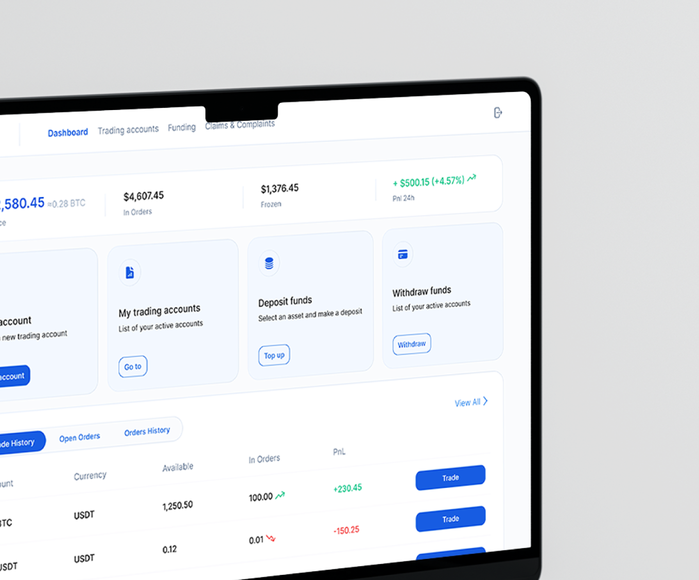
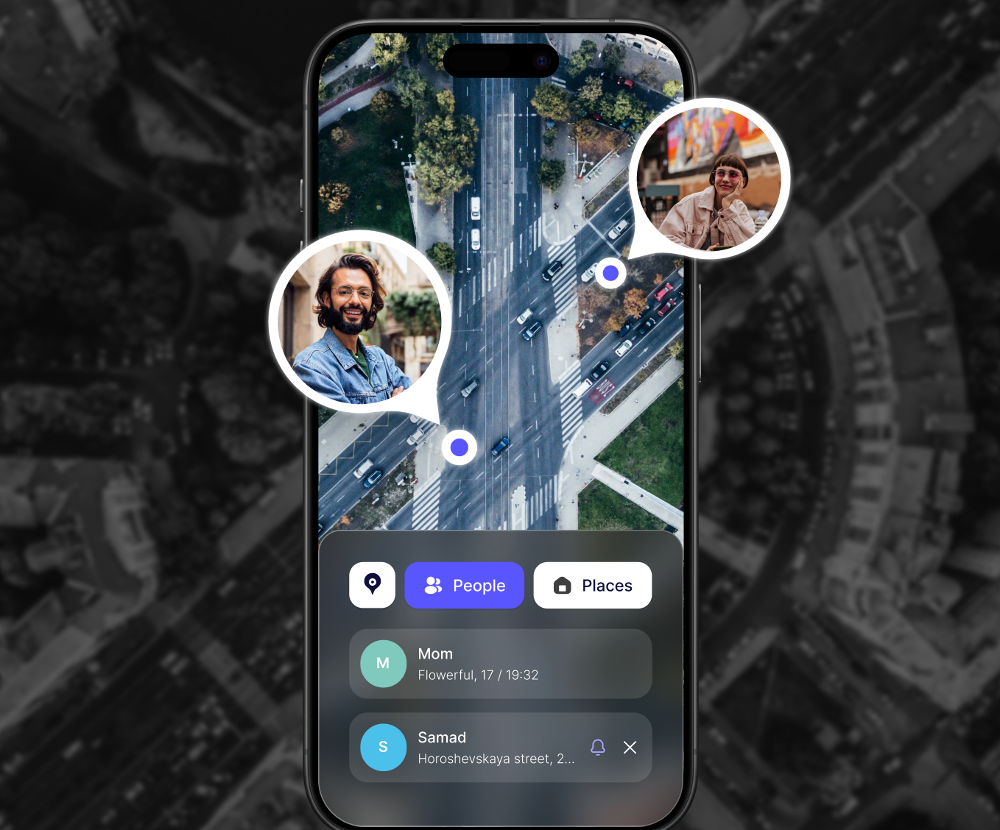

Смотреть крупнее ↗Контекст
Alif, крупнейший банк Таджикистана, развивает модель рассрочки через широкую партнёрскую сеть магазинов и собственный маркетплейс Alif Shop. С ростом числа партнёров и заказов операционная нагрузка на банк начала стремительно увеличиваться.

Исследование
Глубинные интервью с 8 модераторами, ежедневно работающими в админ-панели: интерфейс им знаком, а оформление заказов, добавление товаров и изменение цен не вызывают критических сложностей. Но почти все процессы завязаны на ручных действиях: поиск заявки, звонок клиенту, подтверждение по SMS. Иногда они работают нестабильно, заявки задерживаются или теряются. Раздел доставки часть модераторов не использует вовсе из-за неочевидной логики.

Интервью с партнёрами выявили другую проблему: они не видят заявку с маркетплейса, пока не позвонит колл-центр, а оформление через терминалы ограничено и иногда сбоит. Курьеры не могут самостоятельно оформлять доставку и вынуждены звонить операторам.
Определение задачи
Необходимо доработать ключевые пользовательские сценарии админ-панели: работу с заказами и товарами, раздел доставки, а также статусы и заявки. Ускорить работу системы и сократить количество ручных операций.
Поиск решения
Гипотеза: текущая админ-панель ориентирована на внутренние процессы, а не на задачи партнёров, из-за чего ключевые сценарии остаются зависимыми от модераторов, колл-центра и отдела партнёров. А что если сместить фокус админки на партнёров и сделать её инструментом для самостоятельной работы?
Решение
Переработала структуру админ-панели: навигация переехала из бокового сайдбара в верхнюю часть интерфейса. Новая структура включает разделы «Магазины», «Товары», «Заявки», «Доставка», «Отзывы» и отдельный раздел модерации.

Добавила единый канал коммуникации с банком в виде чата, объединяющего взаимодействие с модераторами, отделом партнёров и колл-центром, а также уведомления об остатках товаров.

Процесс добавления товара
Добавление товара занимало много времени из-за необходимости вручную заполнять данные, даже если товар уже существовал в системе. Добавила функцию поиска товара перед его созданием: если он уже есть на маркетплейсе, партнёр использует готовые данные и сразу переходит к добавлению медиа и созданию оффера вместо заполнения всех этапов.

Партнёрский инсайт
Из интервью: при формировании цен на товары партнёры ориентируются на конкуренцию. В процессе добавления товара интегрировала блок с ценами на аналогичные позиции: партнёр сразу видит рыночный диапазон и принимает решение по стоимости в момент создания карточки.

Раздел доставки
Самый проблемный раздел: партнёры и курьеры тратили много времени на оформление заявок, которые приходят не только с маркетплейса, но и из оффлайн-точек. Разделила раздел на самовывоз и доставку и перенесла оформление заявок из терминалов в админку, сохранив всю бизнес-логику.

Мобильная версия
Спроектировала мобильную версию с полным функционалом, интегрировав обновлённую логику и оптимизированные процессы.

Итоги
Удалось переосмыслить админ-панель из внутреннего инструмента в продукт, ориентированный на самостоятельную работу партнёров.
- Существенно снизилась нагрузка на колл-центр и модераторов за счёт переноса части процессов
- Партнёры стали самостоятельнее в управлении ключевыми операциями и больше не зависят от подтверждений
- Система стала более устойчивой к росту нагрузки на фоне развития BNPL-модели

Смотреть крупнее ↗Цель проекта
Создать MVP личного кабинета с нуля, который покрывает ключевые финансовые сценарии пользователей и формирует основу для дальнейшего развития продукта.
На предыдущем этапе разработала айдентику и лендинг проекта, а в рамках этого кейса сфокусировалась на проектировании личного кабинета: структуре, логике и интерфейсах для управления счетами, пополнения, вывода средств, переводов и отслеживания баланса.
Исследование
Заказчик уже провёл предварительное исследование и сформировал список ключевых функций, поэтому фокус работы сместился на бизнес-анализ: кто является пользователем личного кабинета, чем отличаются их сценарии поведения и как эти различия должны повлиять на структуру системы.

Разделение пользователей на активных трейдеров и менее активную аудиторию показало: попытка спроектировать универсальный интерфейс приводит к потере эффективности для обоих сегментов. MVP сфокусировался на оптимизации сценариев для активных трейдеров, с заложенной основой для дальнейшей персонализации.
Определение задачи
Бизнес-анализ показал пять разных типов пользователей личного кабинета — от скальпера, для которого любая задержка интерфейса означает убыток, до новичка, которому нужен обучающий UX. Эти различия напрямую определили, какие сценарии MVP должен закрыть в первую очередь.
Активный трейдер
Основной пользователь платформы
Скальпер
Высокочастотный трейдер
Свинг-трейдер
Среднесрочный трейдер
Инвест-трейдер (гибрид)
Комбинирует инвестиции и трейдинг
Новичок
Начинающий трейдер
Работа над продуктом
Ключевые сценарии: управление счетами, пополнение, вывод средств, переводы между счетами и отслеживание состояния средств. Основной экран спроектирован вокруг быстрого доступа к операциям, вторичные и аналитические данные вынесены в менее приоритетные зоны.

Работа с торговыми счетами: концепт 1
Торговый счёт — основная сущность продукта, точка входа во все ключевые сценарии. Первый вариант: классический табличный список счетов, паттерн, широко используемый у конкурентов и привычный пользователям. Протестировали его в качественном UX-исследовании с фокусом на базовые сценарии.

Концепт 2 — карточный формат
Во втором концепте пересобрала представление счетов в карточный формат, где каждый счёт — самостоятельная единица с полной информацией и действиями. Несмотря на то, что табличный формат оказался более ожидаемым и привычным, карточный показал лучшие результаты в понимании и скорости взаимодействия. Выбрала его как основное решение, оставив таблицу в резерве для масштабирования при росте числа счетов.

Центр управления средствами
Объединила пополнение, вывод и внутренние переводы в единый раздел Funding. Решение приняли совместно с заказчиком, чтобы упростить навигацию и сократить количество разрозненных точек входа в финансовые операции. По результатам юзабилити-тестирования пользователи отмечали более простое восприятие структуры и быстрый доступ к операциям.

Поддержка внутри продукта
Добавила раздел Claims & Complaints: встроенный блок обращений в формате чата. В спорных ситуациях критично важен быстрый прямой канал коммуникации без поиска внешних контактов. На этапе раннего запуска ожидается повышенное количество обращений, поэтому чат стал не только каналом поддержки, но и инструментом обратной связи для улучшения продукта.


Итоги
Спроектирован MVP веб-кабинета для управления финансовыми операциями. Заложенная структура решения позволяет масштабировать продукт за счёт добавления новых сценариев без нарушения основной логики взаимодействия.
- Определить ключевые пользовательские сегменты и их поведенческие модели, что позволило сфокусировать продукт на сценариях активных трейдеров
- Спроектировать и протестировать разные подходы к отображению торговых счетов
- Сформировать архитектуру кабинета, ориентированную на быстрые и частые финансовые операции

Смотреть крупнее ↗Цель проекта
Разработать единое мобильное решение, которое помогает семьям оставаться на связи и быть уверенными в безопасности близких, объединяя геолокацию, экстренные оповещения и быструю коммуникацию в одном приложении.
Общение со стейкхолдерами
Основной фокус: обеспечить безопасность членов семьи, не создавая ощущения тотального контроля. Важно было найти баланс: дать родителям инструменты для спокойствия, не вызывая сопротивления у детей и подростков.
Анализ конкурентов
Вместо глубинных интервью сосредоточилась на анализе существующих решений: Kids360, Kid Security, iSharing и Family Tracker: какие функции предлагают, на чём делают акцент и какие сценарии используют для удержания пользователей.
Монетизация конкурентов
Большинство приложений используют модель freemium: базовые функции бесплатны, а расширенные возможности открываются по подписке. Бесплатной версии чаще всего достаточно только для базового отслеживания, а ключевые сценарии безопасности и контроля скрыты за paywall.
Выводы
Исследование определило не только продуктовое направление, но и реалистичный масштаб MVP, учитывая высокую техническую сложность решений в области семейного трекинга:
Работа с GPS в реальном времени
Геофенсинг
Обработка маршрутов
Интеграция с картографическими API
Определение задачи
Разработать мобильное приложение для семейной безопасности со сценариями отслеживания местоположения, экстренных уведомлений и встроенного чата для общения.
User flow
По результатам исследования проработала user flow, основанный на ключевых сценариях использования продукта.
Главный экран
Спроектирован вокруг интерактивной карты: члены семьи в реальном времени с актуальным статусом, быстрое переключение между людьми и местами, быстрые действия и построение маршрута прямо внутри приложения, по логике, аналогичной картографическим сервисам.
Скрыть геолокацию
Гипотеза: возможность временно скрывать местоположение повысит доверие к продукту и снизит ощущение контроля. Тестирование показало: респонденты позитивно восприняли саму возможность скрытия, но в родительском сценарии это вызвало вопросы: теряется контроль над ребёнком.
Доработали логику: родитель может ограничить возможность скрытия геолокации для ребёнка. Это сохранило контроль в детском сценарии и дало взрослым пользователям управление своей приватностью.
История поездок
Добавили историю поездок за последние 30 дней с возможностью просматривать собственные маршруты. Функция доступна в рамках премиум-подписки и не отображается другим участникам семейного круга. Это расширило сценарии использования без усложнения базового опыта.
Геозоны и родительский контроль
Добавила функцию создания геозон, где родитель может вручную нарисовать или выбрать на карте область допустимого перемещения ребёнка. При выходе за пределы зоны отправляется уведомление.
Финальный концепт
Включает базовые сценарии семейной безопасности и коммуникации: отслеживание геолокации в реальном времени, геофенсинг, уведомления о перемещениях и встроенный чат для общения внутри семейного круга. Все ключевые функции конкурентных приложений адаптированы под единый пользовательский опыт.
Итоги
Спроектирован и запущен MVP мобильного приложения для семейной безопасности. Расширенная аналитика перемещений и гибкие настройки приватности зафиксированы как направление для дальнейшего развития.
- Сформировать и протестировать ключевые пользовательские сценарии (геолокация, семейный круг, экстренные уведомления и коммуникация)
- Провести первичное юзабилити-тестирование и собрать обратную связь по ключевым функциям
- Проработать модель монетизации на основе freemium-подхода с премиум-подпиской и пробным периодом, валидировав готовность пользователей к оплате за расширенные сценарии
 Смотреть крупнее ↗
Смотреть крупнее ↗
Моя роль
Работала продуктовым дизайнером в проекте по созданию мобильного приложения для онлайн-тренировок. Запускали MVP, поэтому на старте сфокусировалась на исследовании: изучила конкурентов и помогла определить структуру и логику приложения. Дальше отвечала за визуальную часть и пользовательский опыт: разработала концепцию дизайна, айдентику и интерфейсы. На этапе разработки тесно взаимодействовала с программистом, проводила дизайн-ревью и следила за соответствием финального продукта изначальной идее.
Исследование
Проект нужно было реализовать в сжатые сроки, поэтому вместо глубинных исследований сфокусировалась на анализе рынка: Down Dog, Yoga for Beginners, Yoga Fit и Daily Yoga по ключевым продуктовым показателям, напрямую влияющим на пользовательский опыт.

Ключевая проблема рынка: отсутствие продукта, который одновременно даёт понятную навигацию новичкам и достаточную гибкость и персонализацию продвинутым пользователям.
Определение задачи
Спроектировать йога-приложение с понятным стартовым опытом, которое при этом постепенно раскрывает уровни персонализации и сложные функции.
Работа над продуктом
Ключевой ценностью категории определили персонализированное планирование тренировок. Этот сценарий стал основой архитектуры продукта. Важно было сохранить баланс между простотой входа для новичков и вариативностью для продвинутых, не перегружая интерфейс количеством направлений. Отдельным ограничением стал отказ от мультиформатного контента и случайных тренировок в пользу заранее подобранных видеоуроков от тренеров, чтобы сохранить ощущение «живого» и качественно подобранного опыта.

В основе продукта: базовые практики (Хатха-йога, Йога Айенгара) и более динамичные направления для пользователей с высокой нагрузкой (Аштанга, Виньяса-флоу). Для каждого направления предусмотрены три уровня сложности, начинающий, продвинутый и мастер, что даёт понятную прогрессию внутри приложения.

Health-функции
Вопрос: за счёт чего продукт может выделиться на фоне конкурентов при существующих ограничениях, не усложняя основной сценарий тренировок. Гипотеза: расширение за счёт смежных health-функций повысит вовлечённость и усилит восприятие приложения как комплексного инструмента заботы о себе. В условиях ограниченных ресурсов оценивала направления расширения через сложность реализации, пользовательскую ценность и влияние на монетизацию.

Решение: интегрировать трекер сна и потребления воды. Реализацию упростило то, что ранее уже был запущен персонализированный трекер сна: переиспользовала его логику, адаптировав под новый контекст, и добавила отслеживание воды как дополнительный показатель. На тестировании респонденты позитивно отреагировали на расширение функциональности.

Финальный концепт


Итоги
Спроектирован и запущен MVP мобильного приложения для йоги, фитнеса и медитации.
- Узнать потребности будущих клиентов и собрать бэклог
- Собрать и протестировать базовый пользовательский сценарий тренировок
- Выявить зоны роста в контентной части и логике прогрессии